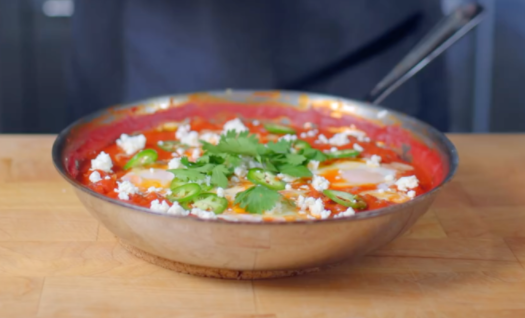

Shakshuka

Description
Shakshuka is a Maghrebi dish that incorporates a tomato-based sauce, eggs, and Northwest African spices. While many variations exits, we will be creating a traditional iteration of this Northwest African dish. Prepare to make a trip to an international market before attempting this recipe; you likely won't find the spices you need in your pantry!
Ingredients
- 1/4 cup diced onion
- 3 cloves of garlic, minced
- 1 tsp ras el hanout
- 3/4 tsp cayenne pepper
- 1/2 tsp cumin
- 28 oz can of crushed tomatoes
- 1 tbsp paprika
- 1 1/2 tsp harissa
- 1/2 cup roasted red peppers
- 5 large eggs
Method
- In a stainless steel pan, preheat 2 tablespoons of olive oil over medium heat. Once shimmering, add the diced onion and sweat the onions for 3 minutes over moderate heat.
- Once translucent and soft, add in 2-3 cloves of garlic and saute for an additional 30 seconds before adding 1 teaspoon of ras el hanout, ½ teaspoon of cayenne pepper, and ½ teaspoon of cumin. Toast the spices for about 30 seconds, and remove the pan from the heat if it starts to get too hot.
- After toasting for 30 seconds or until very fragrant, add in a 28 ounce can of tomatoes. Bring that to a simmer and add ¼ teaspoon of cayenne pepper, 1 tablespoon of paprika, 1 ½ teaspoon of harissa, and ½ cup of roasted red pepper.
- Once everything is added, bring it to a boil. Once boiling, lower the heat and let it simmer for about 20 minutes, or until the sauce thickens.
- After the sauce has thickened and small egg divots can be formed, use a spoon to form a well in the sauce and crack an egg inside each well.
- Gently spoon the sauce up and around the whites of each egg to help them cook more evenly. Lower the heat, cover with the lid and let it gently simmer for 5 minutes. After 5 minutes make sure the whites of the eggs have set.
- Optional: Remove from the heat and drizzle with honey